Zodiac Signs
Explore the twelve zodiac signs, their symbols, and the broad meanings connected to the yearly path of the Sun.
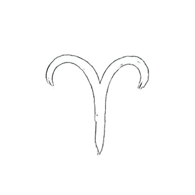
Aries
Aries marks the beginning of the zodiac, associated with initiative, courage, and the energy of spring.
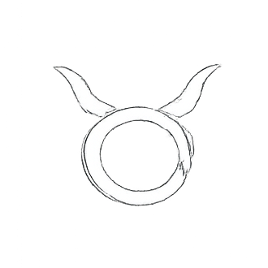
Taurus
Taurus represents stability, patience, and connection to the physical world, often linked to growth and abundance.
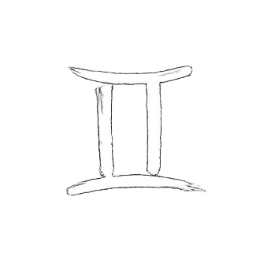
Gemini
Gemini symbolizes duality, communication, and curiosity, reflecting the exchange of ideas and relationships.
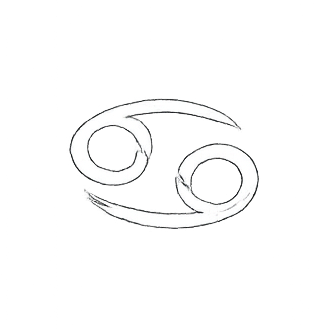
Cancer
Cancer is tied to emotion, home, and memory, marking a turning point in the solar year at the summer solstice.
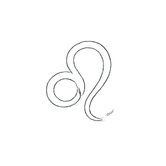
Leo
Leo represents vitality, confidence, and expression, often associated with the height of summer and the power of the Sun.
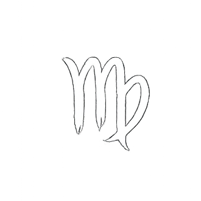
Virgo
Virgo reflects detail, care, and harvest, symbolizing preparation and the balance between effort and reward.
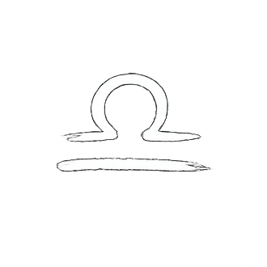
Libra
Libra stands for balance and harmony, aligned with the autumn equinox where day and night are equal.
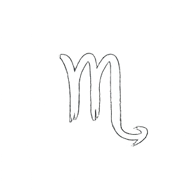
Scorpio
Scorpio represents intensity, transformation, and depth, often linked to cycles of endings and renewal.
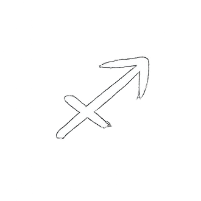
Sagittarius
Sagittarius symbolizes exploration, direction, and knowledge, pointing toward distant horizons.
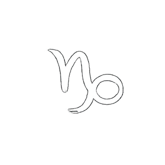
Capricorn
Capricorn reflects discipline, endurance, and structure, marking the return of light at the winter solstice.
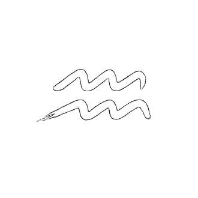
Aquarius
Aquarius is associated with change, innovation, and flow, symbolizing ideas that reshape the world.
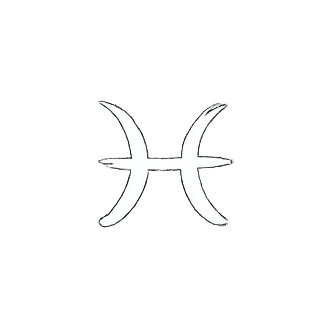
Pisces
Pisces represents intuition, connection, and cycles, often seen as a return to origins and continuity.